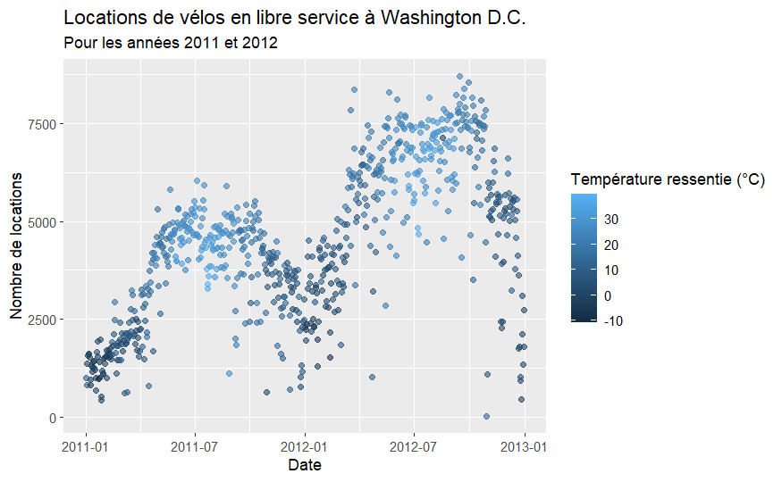

Examen
Introduction
L’examen se compose de 3 exercices. Pour avoir accès aux données et à la feuille de réponse, vous devrez utiliser GitHub et GitHub classroom.
Sur le portail de cours, acceptez l’invitation à rejoindre le projet GitHub Classroom pour l’examen.
Copiez le lien de repo personnel. Cela devrait ressember à Examen-<votre nom d'utilisateur GitHub>.
Dans RStudio:
- Fichier > Nouveau Projet
- Version Control > Git
- Dans Repository URL : indiquez l’adresse de repo copiée précédemment
- Choisissez un nom pour le dossier qui sera créé
- Choisissez le dossier où créer le projet
Cela va copier les fichiers présents sur GitHub, et les copier dans le dossier spécifié.
Dans RStudio, vous devriez voir le fichier .Rmd listé en bas à droite dans la liste de fichier.
Si vous cliquez maintenant sur le fichier .Rmd, il va apparaitre dans la zone en haut à gauche. Vous pourrez l’éditer et le “Render/Knit” pour voir le résultat final.
Veuillez noter que ce que vous écrivez dans le fichier Rmd et ce que vous écrivez dans la console ne communiquent pas (il s’agit de deux environnements différents). Si vous voulez utiliser la console (zone en bas à gauche), il faut retaper les commandes du fichier.
Le type d’output dans le fichier .Rmd est réglé sur github_document. Cela veut dire que lorsque vous allez knit le document, un fichier .md sera généré avec votre rapport.
C’est ce fichier .md qui sera évalué. Assurez que vous le pushez bien sur Github (il faudra l’inclure dans vos commit) et que son contenu est “propre”. Enlevez les messages indésirables ou non-utiles et assurez-vous que les graphes et images soient correctement rendue depuis GitHub.
Exercice 1 - Manipulation de données et régression (60 points)
Les données
Pour cet exercice, nous utiliserons les données d’utilisation des vélos en libre circulation à Washington, D.C. pour 2011 et 2012, avec les données de météo correspondantes. Les données sont disponibles dans le fichier data/bikeshare.csv.
Les colonnes du jeu de données sont les suivantes:
- dteday: Date
- season: Saison (1:hiver, 2:printemps, 3:été, 4:automne)
- yr: Année (0: 2011, 1:2012)
- mnth: Mois (1 to 12)
- hr: Année (0 to 23)
- holiday: Jour férié ou non
- weekday: Jour de la semaine (0:dimanche, …, 6:samedi)
- workingday: 1 si c’est un jour ouvrable (lundi à vendredi, hors vacances), 0 sinon
- weathersit: Météo
- 1: Temps clair, peu de nuages, partiellement couvert
- 2: Brouillard et nuageux, brouillard et partiellement nuageux, brouillard
- 3: Faible neige, faible pluie et orage, faible pluie et nuageux
- 4: Grosse pluie, grèle, tempête, neige et brouillard
- temp: Température normalisée en degrés Celsius (\(t_min = -8\) et \(t_max = +39\))
- atemp: Température ressentie normalisée en degrés Celsius (\(t_min = -16\) et \(t_max = +50\))
- hum: Humidité normalisée (avec comme valeur maximale 100)
- windspeed: Vitesse du vent normalisée en km/h (avec comme valeur maximale 67)
- casual: Nombre d’utilisateurs casuels
- registered: Nombre d’utilisateurs enregistrés (abonnement annuel)
- cnt: Nombre total d’utilisateurs (casual + registered)
Questions
- Question 1 (5 points) - Recodez la variable
seasonpour en faire unfactoravec les niveaux suivants: “printemps”, “été”, “automne”, “hiver”. Assurez vous que les saisons soient dans l’ordre. Recodez les variablesholidayetworkingdayenfactorégalement avec les niveaux “non” et “oui”, avec “non” comme premier niveau. Recodez la variableyrenfactoravec les niveaux “2011” et “2012”. Recodez la variableweathersitenfactoravec les niveaux suivants: 1 - “Temps clair”, 2 - “Brouillard”, 3 - “Légères précipitations”, et 4 - “Fortes précipitations”.
Si ce n’est pas déjà le cas, utilisez le package lubridate pour transformer la variable dteday en une variable de type date.
Question 2 (5 points) - Calculez les valeurs absolues pour les variables
temp,atemp,humetwindspeed, en multipliant les valeurs normalisées par leurs valeurs minimales et maximales.Question 3 (5 points) - Assurez vous que les variables
casualetregistereds’additionnent bien pour donner la variablecnt.
Indice: Une possibilité est de créer une nouvelle colonne qui contient la valeur TRUE si la somme est égale à cnt et FALSE sinon. Vous pouvez ensuite utiliser cette colonne pour vérifier si la somme est correcte.
- Question 4 (10 points) - Recréez le graphique ci-dessous. Une fois que vous avez créé la visualisation, décrivez en un paragraphe ce que vous pensez être le point de cette visualisation.

Analysez le graphique et indiquez ce que vous en comprenez.
Question 5 (10 points) - Créez un graphique montrant la relation entre le nombre de location de vélos, le faite qu’il s’agisse d’un jour de travail ou non et la saison. Interprétez votre graphique
Question 6 (5 points) - Séparez les données en un ensemble d’entraînement et un ensemble de test. Utilisez 80% des données pour l’entraînement et 20% pour le test. Utilisez un réechantillonnage par Cross-Validation sur les données d’entrainement.
Question 7 (10 points) - Créez deux modèles de régression prédisant le nombre total de locations de vélos à partir de la saison, de l’année, du fait qu’il s’agisse d’un jour de travail ou non, de la météo, de la température, de la température ressentie, de l’humidité et de la vitesse du vent. Pour chacun des modèles, quelle performance est obtenue après entraînement. Quel est le meilleur des deux modèles choisis ?
Indice: Pensez à créer une recette dans laquelle vous pourrez créer faire les prétraitement que vous jugez utiles.
- Question 8 (10 points) - Appliquez vos deux modèles sur les données de tests. Représentez sur un même graphique les valeurs prédites par chaque modèle en fonction des vraies valeurs.
Exercice 2 - Manipulation de données et classification (55 points)
Les données
Pour cet exercice, nous allons utiliser les données sur les passagers du Titanic. Les données sont présentes dans le fichier data/Titanic.csv. L’objectif est de prédire si un passager a survécu ou non au naufrage du Titanic.
Les colonnes du jeu de données sont les suivantes:
- PassengerId: Identifiant du passager
- Survived: Survie (0 = Non, 1 = Oui)
- Pclass: Classe du passager (1 = 1ère, 2 = 2ème, 3 = 3ème)
- Name: Nom du passager
- Sex: Sexe du passager
- Age: Âge du passager
- SibSp: Nombre de frères et soeurs / époux à bord
- Parch: Nombre de parents / enfants à bord
- Ticket: Numéro du ticket
- Fare: Prix du ticket
- Cabin: Numéro de cabine
- Embarked: Port d’embarquement (C = Cherbourg, Q = Queenstown, S = Southampton)
Questions
Question 9 (5 points) - Recodez la variable
Pclassenfactoravec les niveaux “1ère”, “2ème” et “3ème”. Recodez la variableSurvivedenfactoravec les niveaux “Non” et “Oui”. Recodez la variableEmbarkedenfactoravec les niveaux “Cherbourg”, “Queenstown” et “Southampton”. Recodez la variableSexenfactoravec les niveaux “Femme” et “Homme”.Question 10 (10 points) - Certaines colonnes semblent avoir des valeurs manquantes. Comptez, pour chaque colonne le nombre de valeurs manquantes. Vous devriez obtenir les résultats suivants:
Age: 177 valeurs manquantesCabin: 687 valeurs manquantesEmbarked: 2 valeurs manquantes
Proposez une manière de gérer les données manquantes pour les variables Cabin et Embarked.
Pour la variable Age, nous allons imputer les valeurs manquantes en utilisant la moyenne de l’âge des passagers. Commencez par calculer la moyenne et la déviation stadard de l’âge des passagers. Nous allons ensuite remplacer les valeurs manquentes par des valeurs tirées d’une distribution normale avec la moyenne et la déviation standard calculées. Créez une nouvelle colonne Age_calc où la valeur de l’âge est égale à celle de Age si elle est disponible et à celle celle calculée si elle est manquante. Pour le calcul, vous pouvez utiliser la fonction rnorm pour générer des valeurs aléatoires à partir d’une distribution normale.
Hint: Si vous utilisez la fonction rnorm directement dans la fonction mutate, il n’y aura qu’un seul tirage de la distribution. Pour contourner ce problème, vous pouvez utiliser la fonction map2 du package purrr pour appliquer la fonction rnorm à chaque ligne du jeu de données. La fonction map2 prend une liste de valeurs et une fonction comme arguments. Il existe également d’autres approches, vous êtes libre d’utiliser celle que vous souhaitez.
Hint: En utilisant la fonction rnorm, vous pouvez obtenir des valeurs négatives pour l’âge. Remplacez ces valeurs par 0.
- Question 11 (10 points) - Combien de passagers ont survécu au naufrage du Titanic? Combien de passagers n’ont pas survécu? Créez une visualisation représentant la survie des passagers en fonction de la classe et du sexe des passagers.
Que pouvez vous en déduire?
12 Question 12 (5 points) - Nous allons essayer de prédire la survie des passagers en fonction des différentes variables. Pour cela, nous allons séparer les données en un ensemble d’entraînement et un ensemble de test. Utilisez 80% des données pour l’entraînement et 20% pour le test. Utilisez un réechantillonnage par Bootstraping sur les données d’entrainement.
- Question 13 (15 points) - Créez deux modèles de classification pour prédire la survie des passagers en fonction de la classe, du sexe, de l’âge, du nombre de frères et soeurs / époux à bord, du nombre de parents / enfants à bord, du port d’embarquement et du prix du ticket. Pour chacun des modèles, quelle performance est obtenue après entraînement. Quel est le meilleur des deux modèles choisis ? Représentez sur un même graphique les courbes ROC des deux modèles.
Indice: Pensez à créer une recette dans laquelle vous pourrez créer faire les prétraitement que vous jugez utiles.
- Question 14 (10 points) - Appliquez le meilleur des modèles sur les données de tests. À l’aide de la fonction
conf_mat, qui prend comme premier argument la liste des vraies valeurs et en deuxième argument la liste des valeur prédites, affichez la matrice de confusion.
Seriez-vous plus confiant dans la qualité de prédiction si le modèle prédit “Non” (pas de survie) ou s’il prédit “Oui” (survie).
Exercice 3 - Exercice exploratoire (40 points)
Les données
Pour cet exercice, nous allons utiliser des données représentant la composition chimique de morceaux de verre provenant de différentes vitres, fabriquées par deux entreprises. Les données sont présentes dans le fichier data/glass.csv.
Les colonnes du jeu de données sont les suivantes:
- company: Indique si le verre provient de l’entreprise A ou B,
- pane: Indique le numéro de la vitre,
- fragment: indique le numéro de fragment pour chaque vitre,
- rep: indique le numéro de réplicat pour chaque mesure de fragment,
Les colonnes suivantes représentes les mesures par LA-ICP-MS des différents composants du verre. Toutes les unités sont en parties par millions (ppm).
Les analyses de 3 fragments de verre inconnus sont également fournis dans le fichier data/unknown-glass.csv.
L’objectif de cet exercice est de déterminer, si possible, pour chaque fragment:
- L’entreprise ayant frabriqué la vitre d’origine des fragments
- La vitre d’origine des fragments
Cet exercice ce veut plus libre dans l’approche à suivre.
Analyse exploratoire (20 points)
Commencez par une analyse exploratoire (Visualisations, PCA, …).
- Question 15 (20 points) - Êtes-vous capable de répondre aux questions posées ?
Si oui, quelle confiance avez vous dans vos conclusions ?
Classification (20 points)
Utilisez ensuite un modèle de classification.
- Question 16 (20 points)Êtes-vous capable de répondre aux questions posées ?
Si oui, quelle confiance avez vous dans vos conclusions ?
Bonus (10 points): Pour la question concernant l’entreprise d’origine, calculez le LR pour un des fragments inconnu.